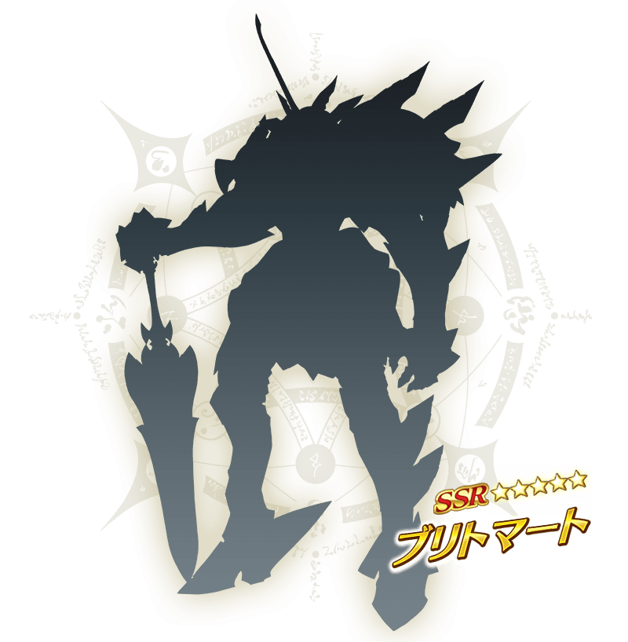

期間限定活動「迦勒底妖精騎士杯 ～第二代的凱旋～」決定自2022年11月上旬開幕！
本活動中，在挑戰與從者的戰鬥勝利的話能獲得活動道具。
收集活動道具的話除了可交換各種報酬外，也可挑戰抽取各種比賽獎品。
由於沒有抽選次數上限能進行無數次，於各關卡收集活動道具來入手豐富的比賽獎品吧！
活動的參加條件為通過第2部 第6章「Lostbelt No.6 妖精圓卓領域 阿瓦隆・勒菲 星辰誕生之刻」。
滿足參加條件，準備參加活動吧
◆關於活動一部份內容的參加條件放寬◆
※本活動的參加條件為通過第2部 第6章「Lostbelt No.6 妖精圓卓領域 阿瓦隆・勒菲 星辰誕生之刻」，通過「特異點F 炎上汙染都市 冬木」後，變得能遊玩活動主線關卡以外的關卡。
※未通過第2部 第6章「Lostbelt No.6 妖精圓卓領域 阿瓦隆・勒菲 星辰誕生之刻」的情況，無法遊玩本活動的主線關卡，敬請注意。
詳情敬請期待續報。 ※本頁面皆為開發中圖片。會有與實際圖片相異的情況。
◆活動開幕預定◆
2022年11月上旬
◆活動參加條件◆
・通過第2部 第6章「Lostbelt No.6 妖精圓卓領域 阿瓦隆・勒菲 星辰誕生之刻」
※不需要通過亞種特異點(從Ⅰ到Ⅳ)。
※本活動的參加條件為通過第2部 第6章「Lostbelt No.6 妖精圓卓領域 阿瓦隆・勒菲 星辰誕生之刻」，通過「特異點F 炎上汙染都市 冬木」後，變得能遊玩活動主線關卡以外的關卡，也能參加獎賞各種比賽獎品的抽取。
【11月4日(五) 21:00追記】
新從者在期間限定活動「迦勒底妖精騎士杯 ～第二代的凱旋～」登場！
詳情敬請期待續報。

其他還有，『「迦勒底妖精騎士杯 ～第二代的凱旋～」開幕前夕宣傳活動』舉辦！
另外，「迦勒底妖精騎士杯開幕前夕 摩根Pick Up召喚」以期間限定舉辦中！
關於詳情，請自下述橫幅確認。
■「迦勒底妖精騎士杯 ～第二代的凱旋～」開幕前夕宣傳活動詳細情報

■「迦勒底妖精騎士杯開幕前夕 摩根Pick Up召喚」詳細情報